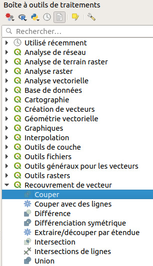

XI. Automatisation de traitements
XI.1 Traitement de base pour une seule couche
Nous allons (re)voir ici une manipulation simple : comment découper une couche par une autre.
Nous verrons dans les chapitres suivants comment automatiser ce traitement, pour par exemple découper rapidement 10 couches par une autre.
Lancer QGIS et ouvrir le projet decoupe.qgz situé dans TutoQGIS_11_automatisation/projets.
Ce projet contient une couche correspondant aux limites communales de la commune de Sainte-Radégonde, ainsi que 4 autres couches de lieux, routes, espaces naturels et bâtiments.
{kind=link}
En allant dans les propriétés de chaque couche, rubrique Source (ou bien en survolant le nom de chaque couche et en lisant l'infobulle), on peut constater qu'elles sont toutes en RGF93/Lambert 93, code EPSG 2154.
Pour découper la couche de routes par la commune : Boîte à outils → Recouvrement de vecteur → Couper 
{kind=link}
Une nouvelle couche temporaire est créée, qui ne contient que les portions de routes à l'intérieur de la commune.
Comment faire maintenant pour découper les 4 couches par la commune, sans répéter 4 fois cette opération ?
chapitre précédent chapitre suivant
haut de page